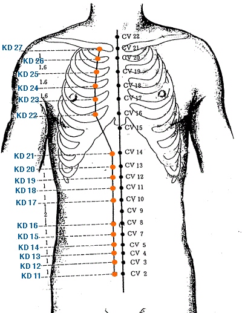
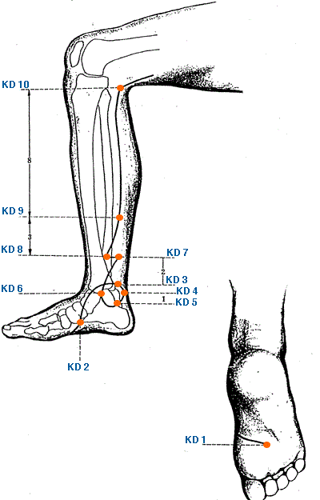

|


|
Meridian Point : KD-1
Location: On sole, in depression with foot in plantar flexion, at the junction of the anterior 1/3 and posterior 2/3 of line connecting base of the 2nd and 3rd toes with the heel.
English Name: Gushing Spring
Pinyin Name: Yongquan
Actions & Effect:
Descends excess from above, useful for LV Yang Rising or LV Fire - headaches, tinnitus, hypertension, epilepsy.
Cooling KD empty heat - chronic sore throat, dry mouth, low back pain.
Tonify KD/HT Yin - insomnia, palpitations, anxiety, poor memory, mania, rage w/desire to kill, hot flashes, night sweats.
Loss of consciousness, yang collapse.
Tong Ren/Tam Healing System: Used to descend the energy in the body particularly after qi gong exercises, energy healing sessions, etc. Useful for headache, nausea, insomnia, etc.
Disease
Kidney disorders, loss of consciousness, headache, pain of the neck, dizziness, infantile convulsion, manic psychosis, nausea, vomiting, hysteria
Meridian Point : KD-2
Location: Anterior and Inferior to the medial malleolus in a depression on the lower border of the tuberosity of the navicular bone.
English Name: Blazing Valley
Pinyin Name: Rangu
Actions & Effect:
Generally useful for clearing excesses & acute presentations.
Ying Spring Point - clears heat, especially KD empty heat - chronic sore throats, irritability, night sweats, thirst.
Lower abdomen/sex organ/genital issues - Irregular menstruation, uterine prolapse, seminal emissions, impotence, genital itching and/or pain, difficult urination.
Wasting and Thirsting Disorder - thirst, dry mouth.
Local point for foot problems - swelling and/or pain, restless feet.
KD related emotional imbalances - fear of being apprehended, fright.
Moxa to tonify KD Yang.
Disease
Headache, dizziness, sore throat, diabeted, irregular menstruation
Meridian Point : KD-3
Location: In depression midway between the tip of the medial malleolus and the attachment of the achilles tendon.
English Name: Great Ravine
Pinyin Name: Taixi
Actions & Effect:
Tonify KD Qi, Yin or Yang Deficiencies from any etiology.
Asthma from KD Deficiency - difficulty inhaling.
Tonifies Yin of KD (chronic sore throat, empty heat), LV (dizziness, tinnitus, headache) a/or HT (anxiety, insomnia, excessive dreaming).
Tonifies Yang of KD (impotence, premature ejaculation, seminal emission, weak low back/knees, frequent urination).
Low back pain, usually of a chronic nature.
Local point for heel a/or ankle pain.
Disease
Impotence, ankle pain, frequent need to urinate, deafness, tinnitus, irregular menstruation, lumbar pain, headache, dizziness, blurring of vision, cough, asthma, diabetes, insomnia, pain in the heel
Meridian Point : KD-4
Location: Posterior and inferior to the medial malleolus in a depression anterior to the medial attachment of the achilles tendon.
English Name: Large Goblet
Pinyin Name: Dazhong
Actions & Effect:
Luo Connecting Point - can be used to treat the LI (opposite the chinese clock).
Important point for somnolence, fright/fear, palpitations, reluctance to interact with others.
Cough, asthma, wheezing, shortness of breath, painful/sore throat.
Chronic low back pain from KD Deficiency.
Local point for heel/ankle issues - pain, strain.
Disease
Cough, asthma, retention of urine, frequent urination, pain in the heel.
Meridian Point : KD-5
Location: 1 cun directly below KI 3 in a depression on the medial side of the tuberosity of the calcaneum.
English Name: Water Spring
Pinyin Name: Shuiquan
Actions & Effect:
Generally nourishes Yin and Blood and moves the uterus.
KD related menstrual issues, amenorrhea, dysmenorrhea (pain/cramps), delayed menstruation, sensations of oppression below the heart (possibly at onset of menstruation).
Uterine prolapse.
Disease
Irregular menstruation, unsmooth urination
Meridian Point : KD-6
Location: In a depression below the tip of the medial malleolus.
English Name: Shining Sea
Pinyin Name: Zhaohai
Actions & Effect:
Sore throat from any etiology, especially empty heat from yin deficiency.
Other Yin Deficient throat related issues - swollen, dry, loss of voice, difficult swallowing.
A range of menstrual issues such as amenorrhea, dysmenorrhea, infertility from cold in the uterus, leukorrhea.
Genital issues (shan disorders) such as swelling, itching, seminal emission and/or involuntary erections in men.
Constipation from Yin Deficiency.
Plum Pit Qi.
Nighttime epilepsy, insomnia, disturbed sleep with nightmares, yin deficient symptoms such as hot hands/feet, night sweats.
A range of anxiety disorders, fear/fright.
Disease
Insomnia, dry mouth, sore throat, constipation, retention of urine, irregular menstruation
Meridian Point : KD-7
Location: 2 cun above KD 3 on the anterior border of the achilles tendon.
English Name: Recover Flow
Pinyin Name: Fuliu
Actions & Effect:
Tonifies KD Yang, especially with respect to water regulation - sweating (too much or too little, spontaneous), swellings, urinary issues.
Oedema, especially chronic effecting the abdomen a/or lower legs.
Five types of Lin Disorder - resolve accumulation of damp a/or damp-heat.
Diarrhea, abdominal distention, hemorrhoids, constipation.
Low back pain from deficiency a/or stagnation.
Disease
Abdominal pain and distention, diarrhea, night sweating, stiffness and pain in loins and spine.
Meridian Point : KD-8
Location: .5 cun anterior to KI 7, 2 cun above KI 3 posterior to the medial border of the tibia.
English Name: Intersection Reach
Pinyin Name: Jiaoxin
Actions & Effect:
Issues of movement and mobility of the medial aspect of the lower limbs, ankle, heel - sprains, pain
Disease
Irregular menstruation, hernia, diarrhea, constipation
Meridian Point : KD-9
Location: 5 cun above KI 3 on the line drawn from KI 3 to KI 10 at the lower end of the belly of the gastrocnemius muscle.
English Name: Guest House
Pinyin Name: Zhubin
Actions & Effect:
Strong spirit disorders - anger, cursing, mania.
Deficient yang, cold, in the abdomen - shan disorder, hernia, pain a/or retraction of the scrotum.
Useful in a detox prescription to assist the cleansing, especially with respect to emotional outbreaks
Disease
Depressive psychosis, epilepsy, abdominal pain and distension, vomiting
Meridian Point : KD-10
Location: On the medial side of the knee joint between the tendons of semitendinosis and semimembranosus.
English Name: Yin Valley
Pinyin Name: Yingu
Actions & Effect:
Clears damp or damp-heat in the lower warmer - urgent/difficult urination, genital pain/itching, leukorrhea, uterine bleeding.
Used to tonify the LV in 5 Phase Treatments
Disease
Impotence, hernia, irregular menstruation, retention of urine
Meridian Point : KD-11
Location: 5 cun below CV 8, .5 cun lateral to CV 2.
English Name: Pubic Bone
Pinyin Name: Henggu
Actions & Effect:
KD 11, KD 12, KD 13, KD 14 & KD 15 all intersect the Chong Mai and are useful as local points for abdominal a/or gynecological issues
Disease
Lower abdominal pain, hernia
Meridian Point : KD-12
Location: 4 cun below CV 8, .5 cun lateral to CV 3.
English Name: Great Manifestation
Pinyin Name: Dahe
Actions & Effect:
KD 11, KD 12, KD 13, KD 14 & KD 15 all intersect the Chong Mai and are useful as local points for abdominal a/or gynecological issues
Disease
Lower abdominal pain, hernia, impotence
Meridian Point : KD-13
Location: 3 cun below CV 8, .5 cun lateral to CV 4
English Name: Qi Hole
Pinyin Name: Qixue
Actions & Effect:
KD 11, KD 12, KD 13, KD 14 & KD 15 all intersect the Chong Mai and are useful as local points for abdominal a/or gynecological issues
Disease
Irregular menstruation, diarrhea
Meridian Point : KD-14
Location: 2 cun below CV 8, .5 cun lateral to CV 5.
English Name: Fourfold Fullness
Pinyin Name: Siman
Actions & Effect:
KD 11, KD 12, KD 13, KD 14 & KD 15 all intersect the Chong Mai and are useful as local points for abdominal a/or gynecological issues
Disease
Abdominal pain and distention, vomiting, diarrhea
Meridian Point : KD-15
Location: 1 cun below CV 8, .5 cun lateral to CV 7.
English Name: Central Flow
Pinyin Name: Zhongzhu
Actions & Effect:
KD 11, KD 12, KD 13, KD 14 & KD 15 all intersect the Chong Mai and are useful as local points for abdominal a/or gynecological issues
Disease
Abdominal pain and distention, vomiting, diarrhea
Meridian Point : KD-16
Location: .5 cun lateral to CV 8.
English Name: Huang Shu
Pinyin Name: Huangshu
Actions & Effect:
Cold a/or Dry effecting the lower abdomen a/or intestines - constipation, abdominal pain, five types of Lin, shan disorder
Disease
Abdominal pain around the umbilicus, diarrhea, dysentry, constipation, hernia, pain in the loins and spine
Meridian Point : KD-17
Location: 2 cun above CV 8, .5 cun lateral to CV 10.
English Name: Shang Bend
Pinyin Name: Shangqu
Actions & Effect:
Local point for abdominal and colon pain and functional issues.
Diarrhea, constipation, abdominal pain.
Disease
Abdominal pain and distention, vomiting, diarrhea
Meridian Point : KD-18
Location: 3 cun above CV 8, .5 cun lateral to CV 11.
English Name: Stone Pass
Pinyin Name: Shiguan
Actions & Effect:
Local Point for abdominal and intestinal issues.
Pain, hiccups, vomiting, harmonizes stomach.
Fertility issues involving stagnation in the lower warmer.
Abdominal pain following childbirth.
Disease
Abdominal pain and distention, vomiting, diarrhea
Meridian Point : KD-19
Location: 4 cun above CV 8, .5 cun lateral to CV 12.
English Name: Yin Metropolis
Pinyin Name: Yin Du
Actions & Effect:
Local point for abdominal and intestinal pain.
Vomiting, reflux, nausea, bloating - harmonizes stomach.
Fertility issues, primarily by moving blood stagnation in the lower warmer.
Disease
Abdominal pain and distention, vomiting, diarrhea
Meridian Point : KD-20
Location: 5 cun above CV 8, .5 cun lateral to CV 13.
English Name: Open Valley
Pinyin Name: Tonggu
Actions & Effect:
Local point for abdominal and digestive issues.
Mania, epilepsy, palpitations, mouth/tongue deviation/swelling - largely through resolving phlegm.
Chest pain, coughing, wheezing.
Disease
Abdominal pain and distention, vomiting, diarrhea
Meridian Point : KD-21
Location: 6 cun above CV 8, .5 cun lateral to CV 14.
English Name: Dark Gate
Pinyin Name: Youmen
Actions & Effect:
Local point for abdominal and intestinal pain and functional issues.
Reflux, vomiting, food stagnation, dystenary - harmonizes stomach.
Liver stagnation affecting the breasts - insufficient lactation, breast distention.
Disease
Abdominal pain and distention, vomiting, diarrhea
Meridian Point : KD-22
Location: In the 5th ICS 2 cun lateral to CV 16.
English Name: Corridor Walk
Pinyin Name: Bulang
Actions & Effect:
Local Point, generally useful for cough, chest tension, constricted breathing
Disease
Cough with dyspnea, distention of the chest and hypochondriac region, vomiting, anorexia.
Meridian Point : KD-23
Location: In the 4th ICS 2 cun lateral to CV 17.
English Name: Spirit Seal
Pinyin Name: Shenfeng
Actions & Effect:
Local Point, generally useful for cough, chest tension, constricted breathing.
Vomiting - harmonizes stomach.
Disease
Cough with dyspnea, distention of the chest and hypochondriac region, mastitis.
Meridian Point : KD-24
Location: In the 3rd ICS 2 cun lateral to CV 18.
English Name: Spirit Ruins
Pinyin Name: Lingxu
Actions & Effect:
Local Point, generally useful for cough, chest tension, constricted breathing.
Breast distention - moves qi stagnation in the chest.
Palpitations, abdominal bloating, panic attacks arising from digestive issues.
Disease
Cough with dyspnea, distention of the chest and hypochondriac region, masritis.
Meridian Point : KD-25
Location: In the 2nd ICS 2 cun lateral to CV 19.
English Name: Spirit Storehouse
Pinyin Name: Shencang
Actions & Effect:
Local Point, generally useful for cough, chest tension, constricted breathing.
Vomiting, reflux, digestive issues - harmonize stomach.
Disease
Cough with dyspnea, chest pain.
Meridian Point : KD-26
Location: In the 1st ICS 2 cun lateral to CV 20.
English Name: Lively Center
Pinyin Name: Yuzhong
Actions & Effect:
Local Point, generally useful for cough, chest tension, constricted breathing - useful for phlegm stagnation.
Digestive issues, nausea, vomiting - harmonizes stomach.
Steaming Bone Disorder.
Disease
Cough with dyspnea, accumulation of phlegm, distention of the chest and hypochondriac region
Meridian Point : KD-27
Location: In a depression on the lower border of the clavicle, 2 cun lateral to the CV line.
English Name: Shu Mansion
Pinyin Name: Shufu
Actions & Effect:
Opens & relaxes the chest - asthma, constricted breathing, cough, chest tightness.
Tonify KD Deficiency leading to adrenal exhaustion - fatique, lowered immunity.
Local point for neck a/or jaw issues - pain, tension
Disease
Cough, asthma, chest pain, vomiting and anorexia
|